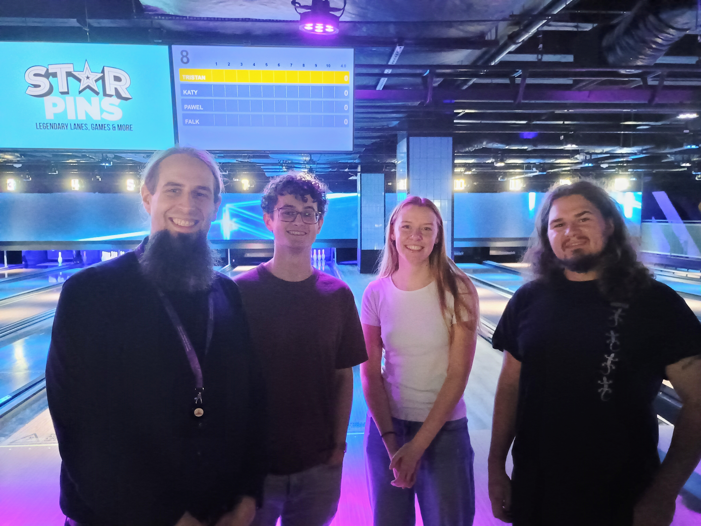
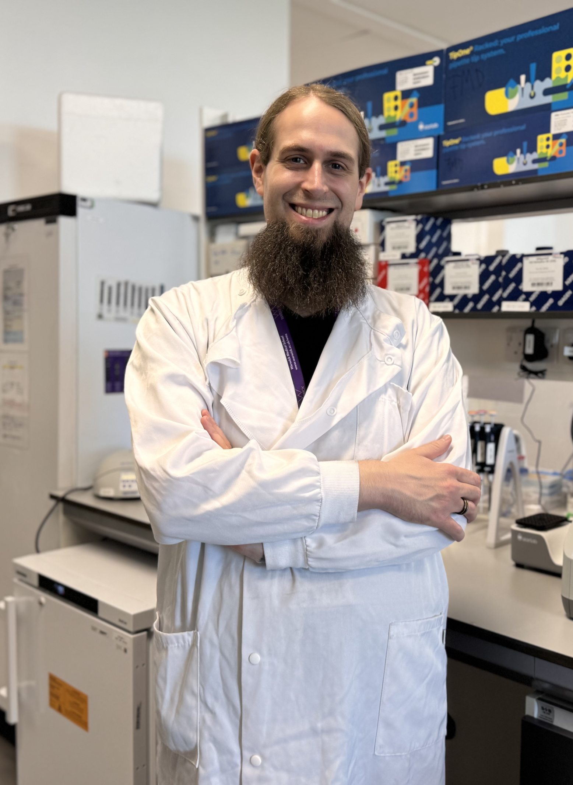
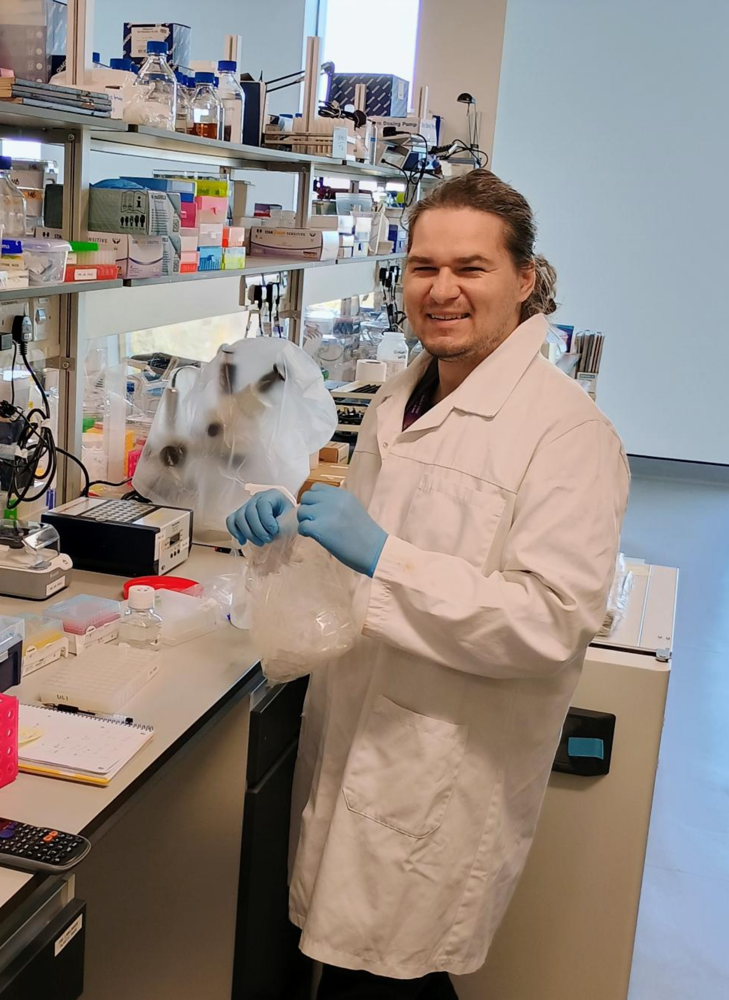
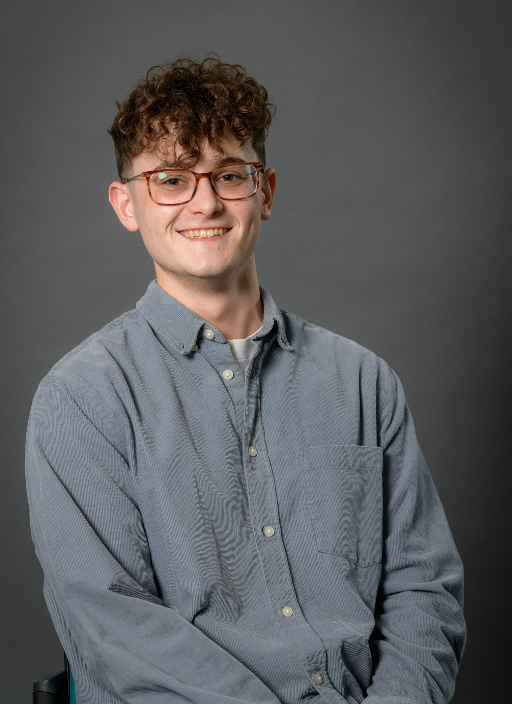
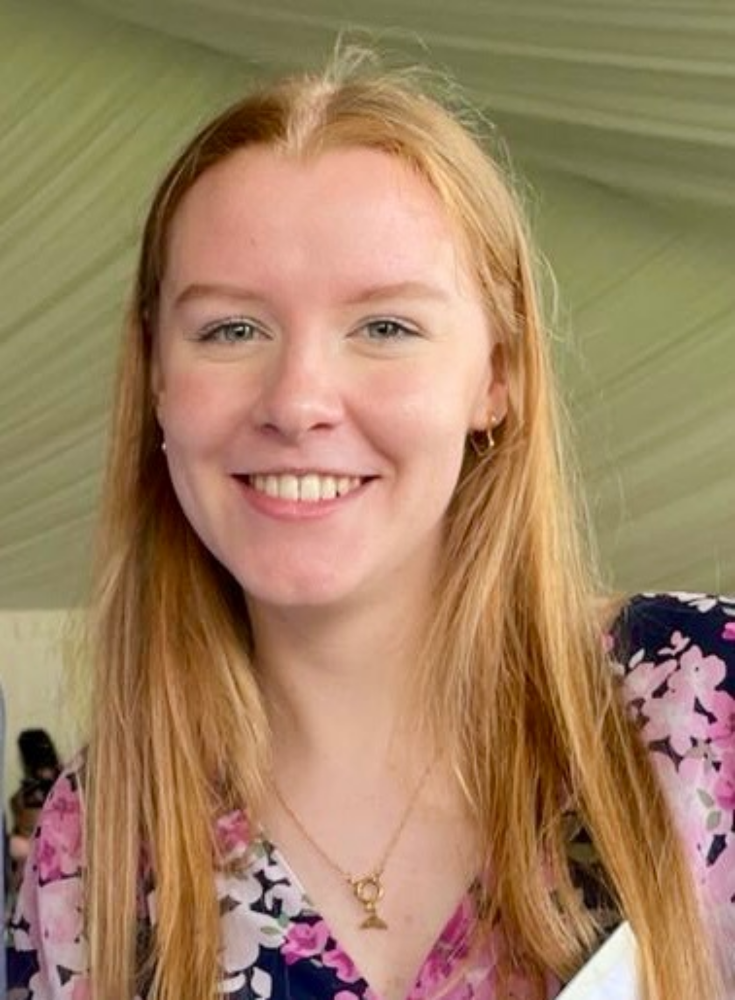

The Team

FMD Lab outing in August 2025
Current Lab Members

Principle Investigator
I am a trained biochemist with a love for fluorescence and all moving things. In 2020, I obtained my PhD from the University of Oxford working with Christian Eggeling. After postdoctoral time with Marco Fritzsche and Scott Fraser, I have the pleasure of leading the FMD Lab.

Postdoctoral Research Associate – Lipid Metabolism & Advanced Imaging
I am working at the interface of lipid metabolism, advanced fluorescence microscopy, and computational image analysis. My research focuses on how cells balance lipid storage and membrane biogenesis, and how these processes can be studied through hyperspectral and phasor-based imaging approaches.
I completed my PhD at the University of Sheffield, where I investigated how magnetic nanoparticles can be used to study mechanosensation and cell migration in zebrafish embryos. After that, I joined the University of Cambridge to explore lipid metabolism and organelle biogenesis.
At Warwick, I develop experimental and computational tools for fluorescence microscopy, combining spectral phasor analysis, photon-based simulations, and super-resolution techniques.

PhD Student
I originally trained in astrophysics at the University of York, but in the final years of my degree I developed a keen interest in medical physics and biophysics. I joined the MRC DTP at Warwick in 2024, and am now undertaking a highly collaborative project between the James Lab and FMD Lab. I aim to elucidate how T cell metabolism changes during activation and exhaustion, and how this differs between native and CAR-T cells using a combination of FLIM and flow cytometry.
Alumni

Summer Student
Whilst studying Biomedical Science at the University of Sheffield, I completed a summer internship at the FMD lab. My projects involved spectral multiplexing with phasor analysis, and building a fluorescent biosensor with mStayGold.